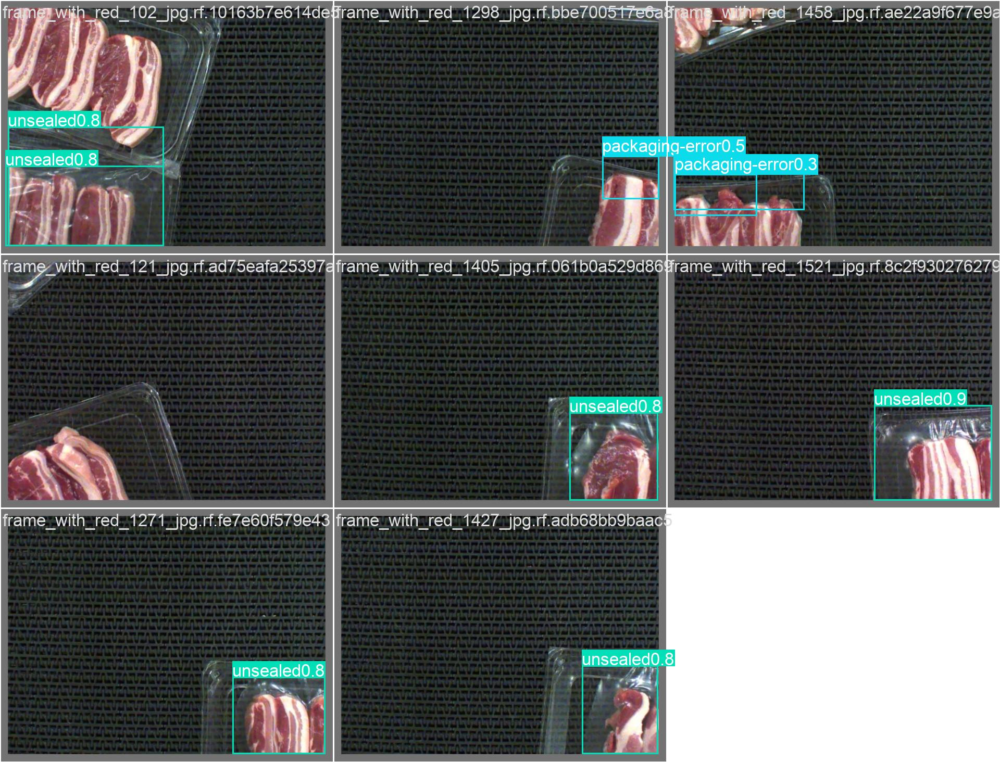

This project evaluates two compact object-detection models, YOLOv5s and YOLOv8s, for identifying visible packaging defects in RGB images of packaged pork rashers. The engineering motivation is an automated inspection station on a food-packaging line: a vision system could flag suspect trays for rejection or human review. The project compares the models using the same 80-image test split at 640-pixel input resolution and batch size 8. YOLOv5s achieved precision 0.812, recall 0.395, mAP@0.5 0.464 and mAP@0.5:0.95 0.210. YOLOv8s achieved 0.756, 0.434, 0.502 and 0.266 respectively. Reported inference times were 3.7 and 4.1 ms/image on an NVIDIA GeForce RTX 4060 Laptop GPU.
The results are descriptive rather than statistically conclusive. The test set contains 79 labelled objects, has no wrinkle examples, and only four twisted-meat examples. Earlier experiments also used a custom validation split whose images remained in the training directory; those validation results are therefore excluded from the final claims. A corrected reproducible, disjoint split is included in the repository for future retraining, but the present comparison does not require new training.
Dataset: MMA3001 Dataset 3, Roboflow Pork Rasher Error Packaging v4, CC BY 4.0. Code and experiment artifacts are maintained in the project GitHub repository.
Food-packaging lines rely on consistent inspection to identify defects before trays are released for distribution. Manual inspection can be repetitive, and missed packaging faults may affect product integrity, shelf life, or downstream handling. This project investigates one component of a possible mechanical/manufacturing inspection system: detecting visible defect regions on pork-rasher trays from a camera image. The intended use is a screening aid that flags images or trays for rejection or human review, not an autonomous food-safety certification system.
The problem is relevant to manufacturing engineering because an inspection model would operate within a production process and must balance detection performance with throughput, repeatability, and the cost of false rejects and missed defects. This work is an offline proof of concept; no camera, conveyor, lighting rig, reject actuator, or real-time production integration was built or validated.
For each input image, the detector returns zero or more predicted defect boxes with a class label, image-coordinate box, and confidence score. Dataset-level outputs include precision, recall, mAP at IoU 0.5 and averaged over IoU 0.5–0.95, confusion matrices, precision-recall plots, and inference timing. The units for image coordinates are pixels after mapping predictions back to the source image; confidence and normalized annotation coordinates are dimensionless.
The model only supports the five annotated visual categories and the image conditions represented by the dataset. It does not estimate meat freshness, microbiological safety, seal strength, or defects invisible in RGB images. The data-preprocessing utility reports missing directories and pairs images with same-stem labels; the split utility fails explicitly for missing labels and invalid split fractions. Real deployment would additionally require image-quality checks, out-of-distribution handling, measured false-negative cost, and an operator escalation path.
The project uses MMA3001 Dataset 3, a Roboflow export of pork-rasher packaging images and bounding-box labels [1]. The task has five classes: loose-meat, packaging-error, twisted-meat, unsealed, and wrinkle. Dataset counts show strong imbalance. In the supplied test split, the evaluator processed 80 images and 79 labelled objects: 3 loose-meat, 23 packaging-error, 4 twisted-meat, and 49 unsealed. There were no wrinkle instances. Twelve images contained no labelled object.
An earlier script copied a random subset of training images into a custom validation folder but left the originals in the training folder. The resulting 669-image validation set therefore overlapped the training data completely. Its mAP and per-class plots are not independent evidence of generalisation and are not used as final performance claims in this report. This is a data-leakage problem, not a defect that can be corrected by adding more decimal places or changing the metric.
To meet the four-hour project constraint without repeating the training runs, the already available 640/batch-8 best checkpoints were evaluated on the supplied test split. Both checkpoints used the same test images, image size, batch size, GPU, and Ultralytics version (8.4.144). The test evaluation was conducted after the checkpoints existed; the recorded workflow does not show test metrics being used for training or parameter selection. These results provide a held-out comparison for this dataset, although the test set is small and cannot establish performance on classes absent or rare within it.
The repository now includes a fixed-seed image-level holdout utility. On the current local dataset it creates 2,679 training images in an explicit image-list file and 670 validation images in a separate folder; the two sets have no filename overlap. Class presence is balanced heuristically at the image level where possible, not by object count. The validation set has 17 images with loose-meat, 389 with packaging-error, 18 with twisted-meat, 273 with unsealed, and only 4 with wrinkle. This optional split is for future retraining and is not the test set used in the results below.
Reproduce: activate the project virtual environment, confirm the source train images and labels are present, then run python src/split_custom_data.py. The generated split is ignored by Git because it is derived from the separately downloaded dataset.
YOLOv5s and YOLOv8s are single-stage convolutional object detectors, selected as compact alternative solutions for the same defect-localisation task [2, 3]. The reported pair uses pretrained small-model checkpoints, 640-pixel input, batch size 8, and the same 80-image test split. Existing project logs record 30 training epochs for these checkpoints; the test comparison itself did not involve retraining. Checkpoints are identified in the repository as yolov5s_baseline_640_batch8/weights/best.pt and yolov8s_baseline_640_batch8/weights/best.pt.
Automated unit tests verify dataset path checks, image-label pairing, metric extraction and saving, and the custom integration functions. The disjoint-split tests check the expected split size on a controlled fixture, repeatability at a fixed seed, class representation, file existence, and non-overlap. All 12 repository unit tests passed in the project environment. Ultralytics also scanned the 80 test labels and produced the per-class and aggregate evaluation metrics and diagnostic plots.
The test evidence validates that the evaluation pipeline can process the available labels and produces internally consistent outputs; it does not prove that the labels are complete, that the sample represents every production condition, or that real-line performance will match the test score. No independent expert relabelling or physical packaging benchmark was available.
The project implements the composite trapezoidal rule and a left-rectangle Riemann sum for sampled precision-recall data [4]. For adjacent recall samples, the trapezoidal contribution is (ri+1−ri)(pi+pi+1)/2; the left Riemann contribution uses (ri+1−ri)pi. Unit tests check a constant-precision curve (area 1), a zero curve (area 0), and a known piecewise-linear sample whose trapezoidal area is 0.65 and left-sum area is 0.90. Invalid input lengths, recall order, and range are also checked for the trapezoidal implementation.
Interpretation boundary: these tests verify the numerical routines on known inputs. The custom integrator was not used to produce the detector mAP values in this report; Ultralytics produced those metrics. Standard detection AP uses a ranked prediction set and an interpolated precision-recall envelope, so a raw trapezoidal integral is not interchangeable with Ultralytics mAP.

| Model | Images / objects | Precision | Recall | mAP@0.5 | mAP@0.5:0.95 | Inference ms/image |
|---|---|---|---|---|---|---|
| YOLOv5s, 640/batch 8 | 80 / 79 | 0.812 | 0.395 | 0.464 | 0.210 | 3.7 |
| YOLOv8s, 640/batch 8 | 80 / 79 | 0.756 | 0.434 | 0.502 | 0.266 | 4.1 |
YOLOv8s exceeds YOLOv5s by 0.038 mAP@0.5 and 0.056 mAP@0.5:0.95, while recall is 0.039 higher. YOLOv5s has precision 0.056 higher and reported inference latency 0.4 ms/image lower. The measured latency difference is a single-run framework timing and is too small to establish a robust speed advantage without repeated, controlled benchmarking. The mAP difference is a useful observation for this sample, not a statistical-significance claim.
| Class | Test images | Objects | YOLOv5s mAP@0.5 | YOLOv8s mAP@0.5 |
|---|---|---|---|---|
| loose-meat | 2 | 3 | 0.517 | 0.500 |
| packaging-error | 16 | 23 | 0.484 | 0.568 |
| twisted-meat | 4 | 4 | 0.0088 | 0.0928 |
| unsealed | 49 | 49 | 0.847 | 0.849 |
| wrinkle | 0 | 0 | Not evaluated | Not evaluated |
The models show similar mAP on unsealed, and YOLOv8s has a higher observed score for packaging-error. Metrics for loose-meat and twisted-meat are based on very few labelled objects and are highly uncertain. There is no test evidence for wrinkle. This coverage pattern makes a single overall mAP insufficient as a deployment acceptance criterion.
For a production screening station, missed defects may be more costly than additional human reviews. Recall and class-specific false negatives therefore matter alongside precision and throughput. Neither model is ready for unattended rejection decisions: confidence thresholds, operating speed, lighting variation, and the cost of false accepts have not been validated on a production line.
YOLOv5s is the baseline and YOLOv8s is the alternative. On the same test subset and inference settings, YOLOv8s provides the higher observed mAP and recall; YOLOv5s provides higher precision and marginally lower measured latency. The model summaries report about 9.11 million parameters and 23.8 GFLOPs for YOLOv5s, versus 11.13 million parameters and 28.4 GFLOPs for YOLOv8s at the evaluation configuration. This suggests YOLOv8s is the larger computational model, while both are compact compared with larger detector variants. These operation counts are framework summaries, not measured energy or memory use.
Evaluation ran on an NVIDIA GeForce RTX 4060 Laptop GPU with 8 GB reported memory, Ultralytics 8.4.144, PyTorch 2.14.0+cu126, and Python 3.12.3. Ultralytics reported 3.7 ms/image for YOLOv5s and 4.1 ms/image for YOLOv8s. Timing includes framework evaluation conditions and is not a complete camera-to-actuator latency measurement. It excludes real conveyor triggering, image acquisition, network communication, and reject mechanism response.
The repository contains earlier batch-size (8 vs 16) and image-resolution (640 vs 1280) training experiments. They demonstrate that parameter sensitivity was investigated. However, they were run before the train/validation overlap was identified and their validation protocol is not sufficiently preserved for a reliable final ablation. Their reported differences are therefore preliminary and are not used to assert that a particular batch size or resolution is optimal.
Within the available four-hour window, the practical improvement was to evaluate the existing matched 640 checkpoints on the withheld test data rather than claim new, unverified training results. The selected 640 input is a reasonable baseline for a future controlled deployment study because the existing 1280 runs were substantially slower in historical logs; the present test comparison does not establish the accuracy/runtime trade-off at 1280. A proper optimisation study would repeat both models with the corrected disjoint split, hold all other settings constant, repeat timing runs after warm-up, and report memory and throughput.
The most important engineering lesson is that a validation score is only meaningful when the evaluation images are independent of model training and the data split is documented. A reproducible script, unit tests, and a plausible-looking confusion matrix do not by themselves prove generalisation. The held-out test provides a more defensible comparison for this project, but its class coverage places strict limits on what can be concluded. The second lesson is to report metric names and units precisely: inference milliseconds per image are not FPS, and custom integration test values are not the detector's mAP.
The project working tree contains the README, MIT-licensed source code, dataset configuration and YOLO label files, experiment logs, unit tests, and generated pdoc HTML documentation. Dataset images and model weight files are excluded from version control because of size; the dataset must be downloaded from the course/Roboflow source before running the workflow. Test metrics are also tabulated in results/test_evaluation_640.csv, and the saved test plots are in report/figures/test_eval/. Commit and push the final reviewed changes before sharing the GitHub repository link.
To reproduce: create and activate a Python 3.12 environment, install PyTorch and Ultralytics plus pytest, pandas and pdoc as described in the README; obtain the licensed dataset and place it under data/; run python src/split_custom_data.py for the optional disjoint training/validation split; evaluate the saved model weights using yolo detect val data=data/dataset.yaml split=test model=<checkpoint> imgsz=640 batch=8 device=0; and run pytest tests/ -v. Exact historical training reproduction requires the original pretrained checkpoint files and matching dataset configuration.
DeepSeek V4 made a low, advisory contribution by helping explain YOLO training parameters and plan experiments. Copilot made a moderate contribution to the final review by comparing the work with the brief, identifying the earlier train/validation overlap, and assisting with the corrected split workflow, tests, metric labels, and documentation. The student's contribution remains primary for selecting the engineering problem and models, running experiments and test evaluation, monitoring the GPU, and deciding which conclusions are supported.
One consequential error in the earlier workflow was treating a copied subset of training images as an independent validation set. The audit showed that the images were still present in training, so those validation metrics could not support claims about unseen data. The response was to withdraw those claims and evaluate the existing checkpoints on the supplied test split. AI assistance therefore helped identify and address a methodological weakness, but the correction was checked against filenames, dataset paths, saved training/evaluation records, and the observed test output. Suggestions were not accepted automatically: for example, a high-resolution batch-size proposal was rejected after GPU memory monitoring showed it was unsuitable. This is why AI-generated technical advice must be tested against actual project constraints.
The student's personal reflection is: “This project taught me that model evaluation cannot rely only on metrics or passing tests; I must confirm validation data were not used in training and check which dataset and measurement method each metric represents. AI can help identify problems, but suggestions still need to be verified against code, experiments, and hardware.” The revised workflow reflects this learning: the earlier validation leakage was checked against filenames and dataset paths, the old metrics were withdrawn as independent evidence, and the existing checkpoints were evaluated on the supplied test split. The student selected the dataset and model comparison, ran training and test commands, monitored GPU behaviour, and remains responsible for the final interpretation and engineering decisions.